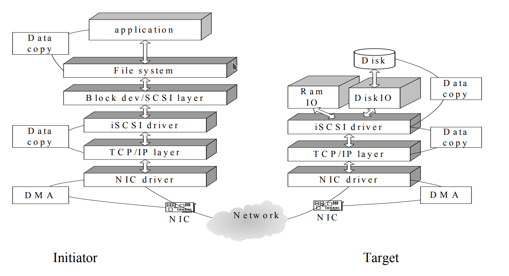

Criando um Storage iSCSI a partir de um Servidor Linux
Objetivo
Este guia demonstra como transformar um servidor Linux em um Storage iSCSI utilizando o targetcli-fb, disponibilizando dispositivos de bloco para clientes através da rede IP. Ao final do procedimento, também é apresentada a configuração de um cliente Linux utilizando open-iscsi para acesso aos volumes publicados.
O que é iSCSI
O Internet Small Computer System Interface (iSCSI) é um protocolo que transporta comandos SCSI sobre redes TCP/IP, permitindo que dispositivos de armazenamento sejam disponibilizados remotamente como dispositivos de bloco.
Diferentemente de compartilhamentos de arquivos (NFS ou SMB), o iSCSI apresenta o dispositivo remoto ao sistema operacional como um disco local. Dessa forma, o cliente pode particionar, formatar e utilizar qualquer sistema de arquivos suportado pelo sistema operacional.
Entre as principais vantagens do iSCSI destacam-se:
- utilização da infraestrutura Ethernet existente;
- menor custo quando comparado ao Fibre Channel;
- acesso em nível de bloco;
- compatibilidade com diversos sistemas operacionais e hipervisores.
Terminologia
| Termo | Descrição |
|---|---|
| Initiator | Máquina cliente que acessa o armazenamento. |
| Target | Servidor que disponibiliza os dispositivos de armazenamento. |
| IQN | Identificador único utilizado por Initiators e Targets. |
| LUN | Unidade lógica disponibilizada ao cliente. |
| Backstore | Dispositivo físico, LVM, arquivo ou outro recurso utilizado como armazenamento. |
Observação
Existem outras tecnologias para transporte de armazenamento em rede, como Fibre Channel, FCoE, AoE e iFCP. O iSCSI utiliza a infraestrutura IP tradicional, simplificando sua implantação.
Arquitetura
A comunicação ocorre entre um Initiator e um Target, utilizando a rede IP.

Diagrama ilustrando:
Cliente → Rede TCP/IP → Servidor iSCSI → Disco/LVM
Pré-requisitos
Servidor Linux com:
- acesso administrativo;
- pacote
targetcli-fb; - dispositivo de armazenamento disponível (disco, partição ou volume LVM).
Cliente Linux com:
- pacote
open-iscsi.
Instalação do Servidor
Instalando o targetcli
apt-get update
apt-get install -y targetcli-fb
Otimização do Kernel
Os parâmetros abaixo aumentam os buffers TCP utilizados pelo iSCSI.
cat <<EOF >> /etc/sysctl.conf
net.core.netdev_max_backlog = 5000
net.core.rmem_max = 16777216
net.core.wmem_max = 16777216
net.ipv4.tcp_rmem = 4096 87380 16777216
net.ipv4.tcp_wmem = 4096 87380 16777216
net.ipv4.tcp_window_scaling = 1
EOF
sysctl -p
Estes ajustes normalmente precisam ser realizados apenas uma vez.
Configuração do Storage iSCSI
Neste exemplo será utilizado um volume LVM.
/dev/mapper/vg_storage-lv_lun01
Inicie o utilitário:
targetcli
Criando o Backstore
Acesse o menu de blocos:
/backstores/block/
Crie o objeto de armazenamento:
create storage-lun01 /dev/mapper/vg_storage-lv_lun01
Saída esperada:
Created block storage object storage-lun01 using /dev/mapper/vg_storage-lv_lun01
Valide:
ls
Imagem sugerida
Resultado do comando
lsapós a criação do Backstore.
Criando o Target
Acesse o menu iSCSI:
/iscsi/
Crie um novo Target.
Exemplo de IQN:
iqn.2026-07.com.example:storage01
create iqn.2026-07.com.example:storage01
O Target criará automaticamente:
- TPG1
- Portal TCP 3260
Valide:
ls
Imagem sugerida
Estrutura do Target criada.
Criando a LUN
Entre no diretório:
/iscsi/iqn.2026-07.com.example:storage01/tpg1/luns
Crie a LUN:
create lun=0 storage_object=/backstores/block/storage-lun01
Saída esperada:
Created LUN 0.
Valide novamente:
ls
Ajustando os atributos do Target
Retorne ao TPG:
../
Configure:
set attribute authentication=0 demo_mode_write_protect=0
Resultado esperado:
Parameter authentication is now '0'
Parameter demo_mode_write_protect is now '0'
Importante
Este exemplo desabilita autenticação CHAP para simplificar o laboratório. Em ambientes de produção recomenda-se utilizar autenticação adequada e restringir o acesso aos Initiators autorizados.
Criando ACLs
Entre no menu:
cd acls
Cadastre os clientes autorizados.
Cliente 01:
create iqn.2026-07.com.example:node01
Cliente 02:
create iqn.2026-07.com.example:node02
Cada ACL criada mapeará automaticamente a LUN.
Valide:
ls
Salvando a Configuração
Retorne à raiz:
/
Salve a configuração:
saveconfig
Removendo Objetos
Os objetos devem ser removidos respeitando a hierarquia.
A ordem recomendada é:
- ACL
- LUN
- Target
- Backstore
Utilize sempre o comando:
delete
no nível correspondente.
Configuração do Cliente Linux
Instalação
apt-get update
apt-get install -y open-iscsi
Definindo o IQN
Edite:
/etc/iscsi/initiatorname.iscsi
Exemplo:
InitiatorName=iqn.2026-07.com.example:node01
Cada cliente deve possuir um IQN exclusivo.
Inicializando o Serviço
systemctl enable open-iscsi
systemctl start open-iscsi
Próximos Passos
Após configurar o cliente, normalmente as próximas etapas são:
- descobrir os Targets disponíveis;
- realizar o login no Target;
- verificar a criação do dispositivo de bloco;
- particionar e formatar o volume, quando necessário;
- montar o sistema de arquivos ou utilizá-lo conforme a aplicação.
Observação
Estes procedimentos podem ser adicionados posteriormente para completar o fluxo de utilização do iSCSI.
Problemas Comuns
- IQN do cliente não cadastrado nas ACLs.
- Porta TCP 3260 bloqueada por firewall.
- Serviço
targetclinão salvo corretamente. - Volume LVM inexistente ou indisponível.
- IQNs duplicados em mais de um cliente.
Considerações de Segurança
- Utilize IQNs exclusivos para cada cliente.
- Restrinja as ACLs apenas aos hosts autorizados.
- Utilize autenticação CHAP em ambientes de produção.
- Limite o acesso à porta TCP 3260 por firewall.
- Monitore o uso do armazenamento e da rede.
Referências
- RFC 3720 — Internet Small Computer Systems Interface (iSCSI)
- Documentação do
targetcli-fb - Documentação do
open-iscsi